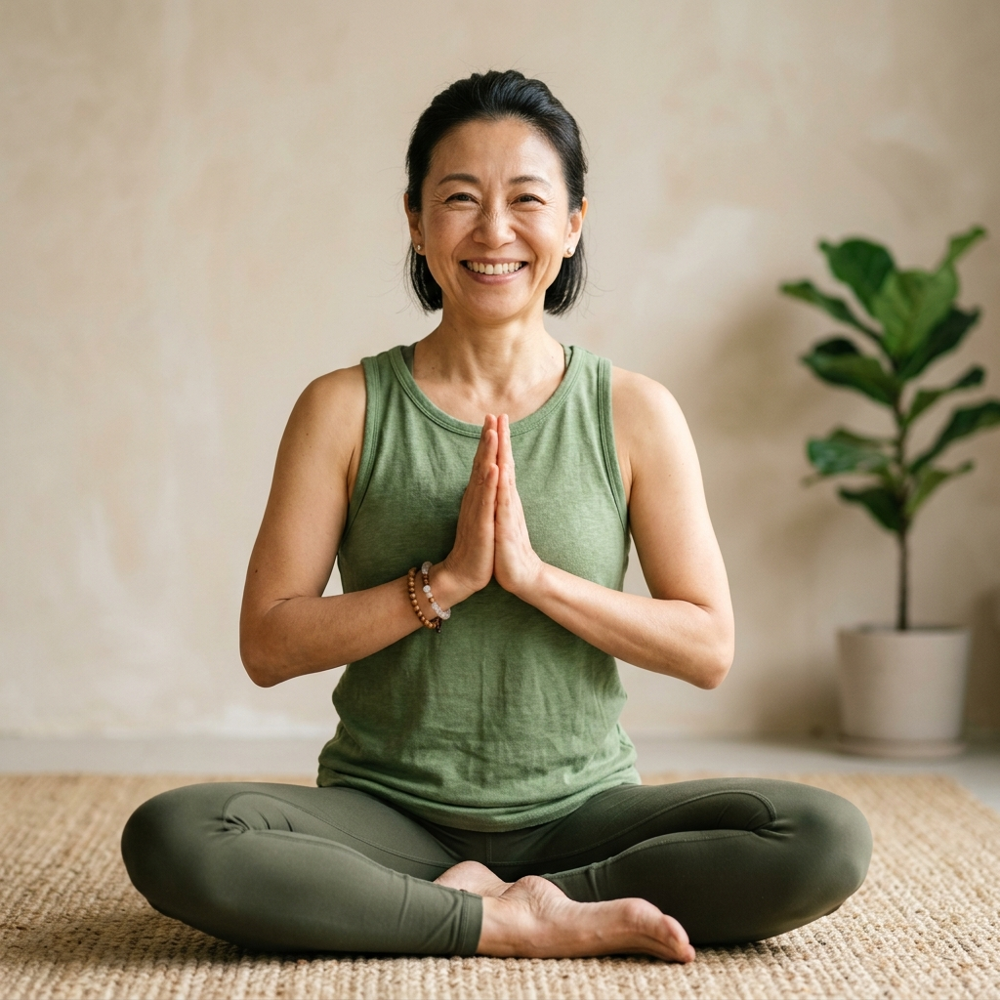
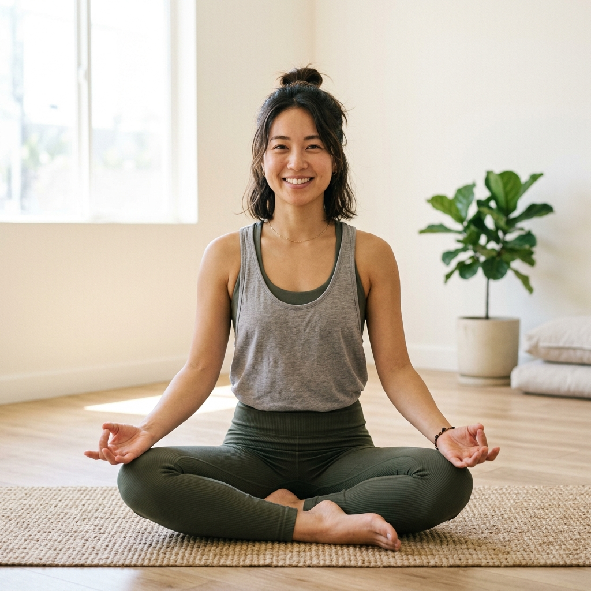

毎日を頑張る自分のために、
深呼吸できる時間を持ちませんか？
未経験の方や体が硬い方でも大丈夫。
無理なく始められ、
心と体を優しくほぐしていく
居心地の良いヨガスタジオです。
仕事や家事、育児、日々の忙しさに追われて、
つい自分のことを後回しにしていませんか？
「もっとリラックスする時間がほしい」
「肩こりや腰痛がずっと気になっている」
「何か運動を始めたいけれど、
激しいものは続かなそうで不安…」
そう思っていても、
いざ新しい環境に飛び込むのは
少し勇気がいるものですよね。
そんなあなたに知ってほしいのが、
「初めてのヨガ」に特化した
私たちのスタジオです。
ヨガに興味はあるけれど、
まったくの初心者でついていけるか不安
周りの人がテキパキ動いている中、
自分だけ取り残されたらどうしよう…
昔から体が硬くて、
ポーズが取れないのではないかと心配
前屈しても手がつかないし、
無理して体を痛めたくない…
たくさんの生徒がいる中で見られるのが恥ずかしい
できれば少人数で、
自分のペースでゆっくり学びたい
どのスタジオを選べば、
長く無理なく続けられるかわからない
コツコミを見てもピンとこないし、
体験してみないとわからない…
どうかご安心ください。
そのお悩みや不安のすべてを、
当スタジオの「初心者専用プログラム」で
しっかりと解決いたします。
指導歴が長く、
初心者を多く見てきた
プロのインストラクター陣が在籍。
一人ひとりの体の硬さや骨格、
その日の体調に合わせて、
無理のないポーズの深め方を
丁寧にサポートします。
置いてけぼりにされる
心配はありません。
ヨガの基本となる呼吸法から始まり、
やさしいストレッチを中心に
体をほぐしていく専用プログラムを
ご用意しています。
難易度の高いポーズは行わず、
まずは「気持ちよく体を伸ばすこと」に
集中できる内容です。
呼吸のリズムに乗るだけで、
自然と心がほどけていきます。
白とオレンジの淡い光を基調とした、
清潔感と温もりのある
アットホームなスタジオ設計。
一歩足を踏み入れた瞬間から
ホッと肩の力が抜けるような
特別なリラックス空間で
心と体を整えていただけます。
アロマの香りが漂うスタジオで、
五感すべてが癒やされます。

初めての方でも安心。
4つのステップでスムーズにご案内します。
24時間受付中のご予約フォームより、
ご希望の日時を選択するだけ。
わずか1分で簡単に完了します。
直前のご予約も大歓迎です。
レッスン開始の15分前に
お越しください。
動きやすい服装
（Tシャツにジャージ等）であれば
お着替え不要です。
更衣室やレンタルマットも
無料でご利用いただけますので、
お仕事帰りでも安心です。
まず簡単なカウンセリングで
お体の状態や不安な点をヒアリング。
その後、リラックスできる
初心者向けプログラムを体験。
インストラクターがあなたの様子を
見ながら優しくリードします。
レッスンの後は
温かいハーブティーをお渡しします。
体の変化を感じながら、
疑問点や今後の通い方など、
どんなことでもお気軽にご相談ください。
※ 無理な勧誘は一切行いません。
ご安心ください。
多くの「はじめて」の方が、
ヨガの気持ちよさを実感されています。

A.S さん（30代・会社員）
運動経験がまったくなく、
ヨガスタジオは敷居が高い気がして
ずっと足踏みしていました。
でも、こちらの先生が
本当に基礎から優しく教えてくださり、
アットホームな雰囲気に
すぐ安心できました。
今では週に1回通うのが
最高の息抜きになっています。
体を動かした後のスッキリ感が
やみつきです！
M.K さん（40代・主婦）
長時間の家事とデスクワークで
肩と腰がガチガチの毎日でした。
「体が硬くても大丈夫」
という言葉を信じて参加したところ、
体験のたった1時間で
体がポカポカして
背筋がスーッと伸びるのを実感。
夜もぐっすり眠れるようになり、
気持ちまで前向きになれました。
もっと早く始めればよかったです！
＼ 今だけの特別なご案内 ／
各クラス少人数制のため、
枠に限りがございます。
ご興味のある方は
お早めにお申し込みください。
初めての方からよくいただく
ご質問をまとめました。
A. はい、まったく問題ございません。
当スタジオにご入会いただく方の
約8割が未経験からのスタートです。
基礎の呼吸法から一つ一つ
丁寧に進めていく
初心者専用のクラスがございますので、
安心してご参加ください。
A. 体が硬い方ほど、
凝り固まった筋肉がほぐれやすく、
ヨガの効果を大きく
実感していただけます。
周りの人と比べる必要は
ありませんので、
ご自身が「いた気持ちいい」と
感じる範囲で
無理なくポーズを行っていただけます。
A. 動きやすい服装
（Tシャツやスウェットなど）を
お持ちいただくか、
着用してご来店ください。
ヨガマットや水分補給のお水は
こちらで無料ご用意しております。
お仕事帰りなどに
手ぶらでふらっと
お立ち寄りいただいても構いません。
A. はい、レッスン開始の2時間前まで
無料でキャンセルが可能です。
急な予定変更にも柔軟に対応いたしますので、
お気軽にご予約ください。
A. 一切ございません。
体験レッスンはあくまで
「ヨガの気持ちよさを知っていただく」
ための機会です。
入会を無理にお勧めすることは
ありませんので、
安心してお越しください。
少しでも興味をお持ちいただけましたら、
ぜひ一度スタジオの空気を
感じにいらしてください。
ヨガが初めての方でも、
安心して心と体をリセットできる
特別な時間をお約束します。
スタッフ一同、
お会いできるのを
楽しみにお待ちしております。